Convenient, versatile, slim and sleek lens cover for ALL your eyewear. Protect your lenses from being scratched, no matter where you put them. Cases are just too big and bulky to carry comfortably. NOT designed for the modern
day lifestyle. Prescription glasses and sunglasses are expensive! Looking through a pair of scratched lenses is not only annoying but potentially dangerous.
A hand made, stylish lens protector that’s so small it can be carried on your keys, or in the smallest of bags. Never again feel stressed about scratching your favourite pair of eyewear!
The perfect combination between style, convenience and great protection. Designed to be used for both glasses and sunglasses, perfectly sized to fit most shapes or styles, big or small.
How do they Work?
1mm magnets on each side of the clip keep them lightly gripped to your glasses. The soft material inside makes sure the lens is protected on both sides.
How do I use them
Being magnetic also means that they can happily stick to any metal surface, from a fridge door to super cool magnetic wooden block that's perfect for holding your keys.
Once attached to your glasses you can put them anywhere, upside down on the table, in a bag full of sharp things. They will always be protected.
OQular Clip is so thin it will fit into the smallest of bags. Perfect if heading out for the night!
Jadelabo J1 - Beautiful, Powerful, and Smart IDEX 3D Printer
Say hello to Jadelabo J1, a powerful 3D printer designed for makers and creators. With two independent print heads, you can speed up your workflow by 2X, or print two different materials in one single object. Even fancier, it has the easiest
calibration, the ecosystem with software and support, and all the smart features we expect from an easy-to-use IDEX 3D printer.
We’re a group of makers who got tired of low-end 3D printers and poor customer support. We’re also 3D printer creators have led the product design, engineering, and mass production for two high-quality 3D printers for four years in our previous
jobs. Starting Jadelabo team, we want to bring high quality and innovative maker tools to people who like to create and amaze us with their ideas and creations.
What can you print with?
Jadelabo J1’s nozzle temperature can reach up to 300°C. It also has an optional Enclosed model. From commonly used materials like PLA, PETG, to advanced materials like Nylon (PA), PC, TPU, ABS, ASA, PVA, and HIPS, Jadelabo J1 can print them all.
Take 3D printing to new heights! No longer are you limited to single material applications. Jadelabo J1 features an Independent Dual Extruders (IDEX) system that allows various combinations of different materials.
The amazing features that set Jadelabo J1 apart.
Support removal has never been easier. The dissolvable support structures make post-processing much easier, leading to a better surface quality for your parts, and let you print complex geometries that would otherwise be impossible. When printing premium
materials, you can save money by printing the supports with a less expensive material.
Jadelabo J1 features an Independent Dual Extrusion System (IDEX) that allows you to print in different materials that have vastly different properties. It also reduces contamination of materials or colors, giving you a neat and clean multi-material
print.
You can print two identical parts simultaneously. This is an advanced feature compared to single / dual extruders 3D printers. Double productivity, without extra cost.
Imagine printing an object and a mirror of the object at the same time! Jadelabo J1 enables more efficient symmetric object printing. Cut your wait time in half, without sacrificing print quality.
OBSBOT Me: AI-Powered, Auto-Tracking Phone Mount
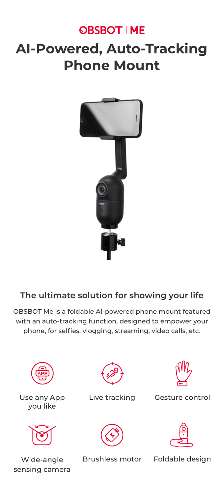
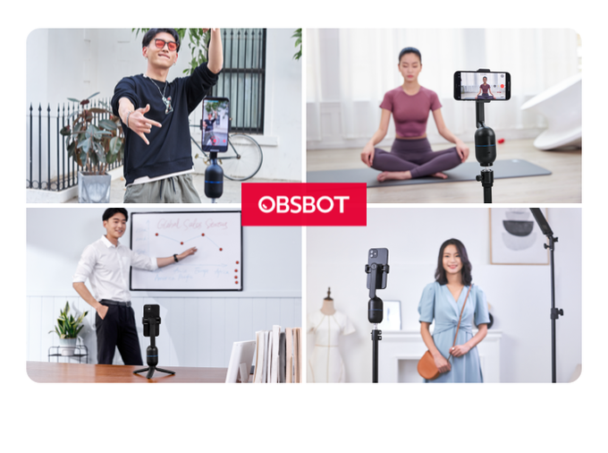
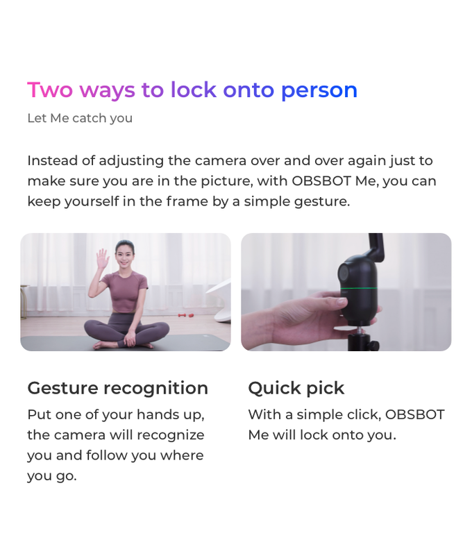
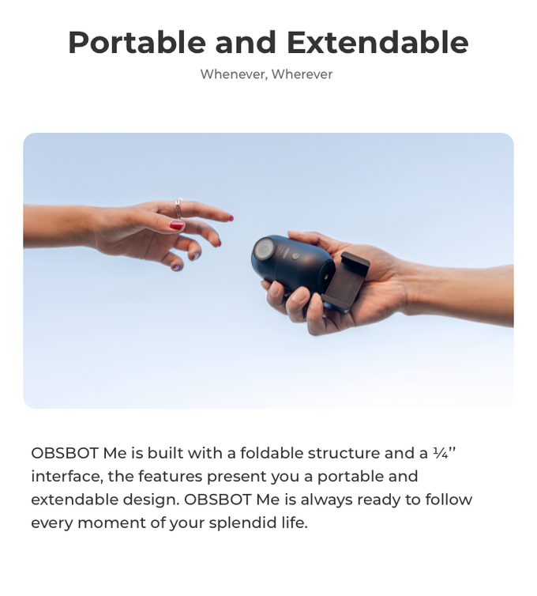
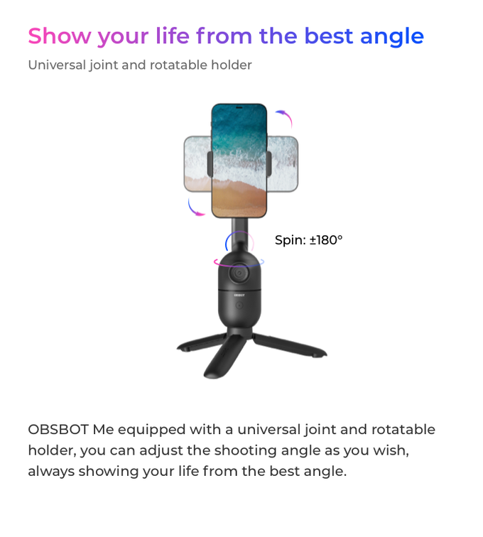
JoGo™ - The Coffee Brewing Straw
A compact, portable, and sustainable way to brew and enjoy a robust cup of coffee, all in the same mug. No machines, no waste, and no hassle.
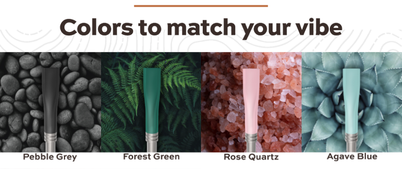
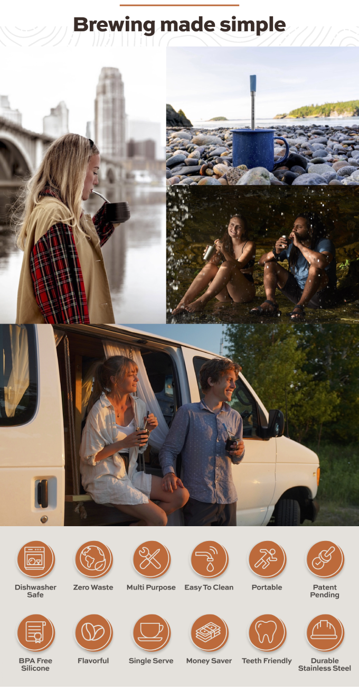
JoGo is a reusable straw that is equipped with a patent-pending mesh filter that allows you to enjoy a robust cup of coffee, loose-leaf tea, or that fresh mojito, anywhere and anytime.
Simply drop in a scoop of your favorite ground coffee, add hot water, pop in your JoGo, and enjoy! The perfect companion for your outdoor, sustainable, and on-the-go lifestyle.
iSwift Pi: Paper-Thin Durable Laptop Desk For Bed and Office
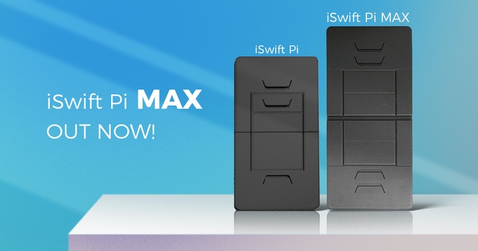
Story
Working in bed or on the couch has become more normal than going into the office during the quarantine time. However, if you've ever tried to use a laptop while sitting on a couch, bed, or chair, you know how uncomfortable it could be.
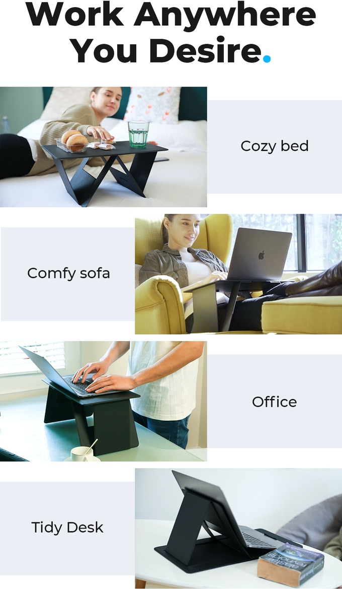
Devised to be a lap desk and a laptop stand, iSwift Pi is a game changer, which makes you feel cozy while having a good posture when you are navigating a new WFH situation.
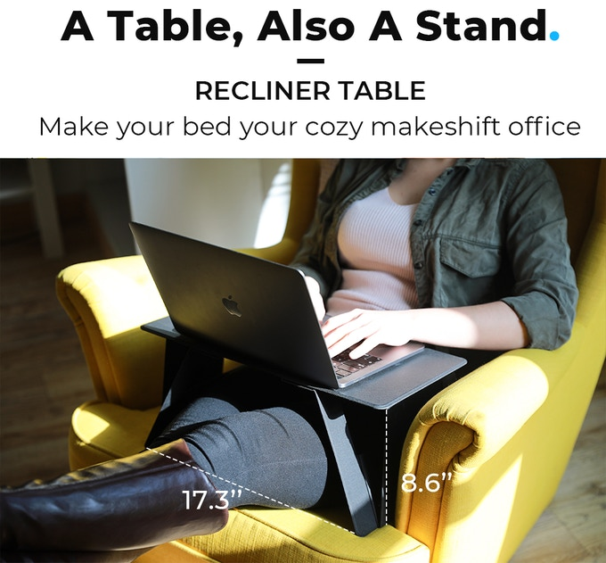
iSwift Pi has two triangle legs that can be folded flat or extended to give you a raised surface to work from, making sure you have a nice and comfortable time using your laptop at bed, sofa or anywhere.
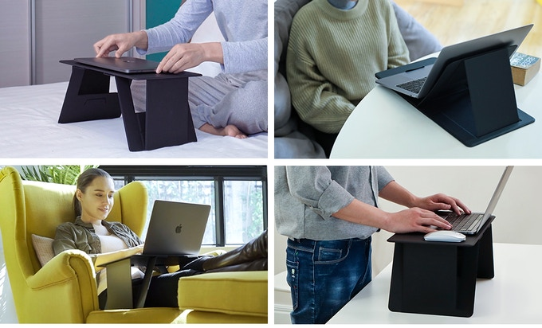
The solid legs work great whether you place it on the bed while you work, or on a table to get a suitable angle to work from while standing